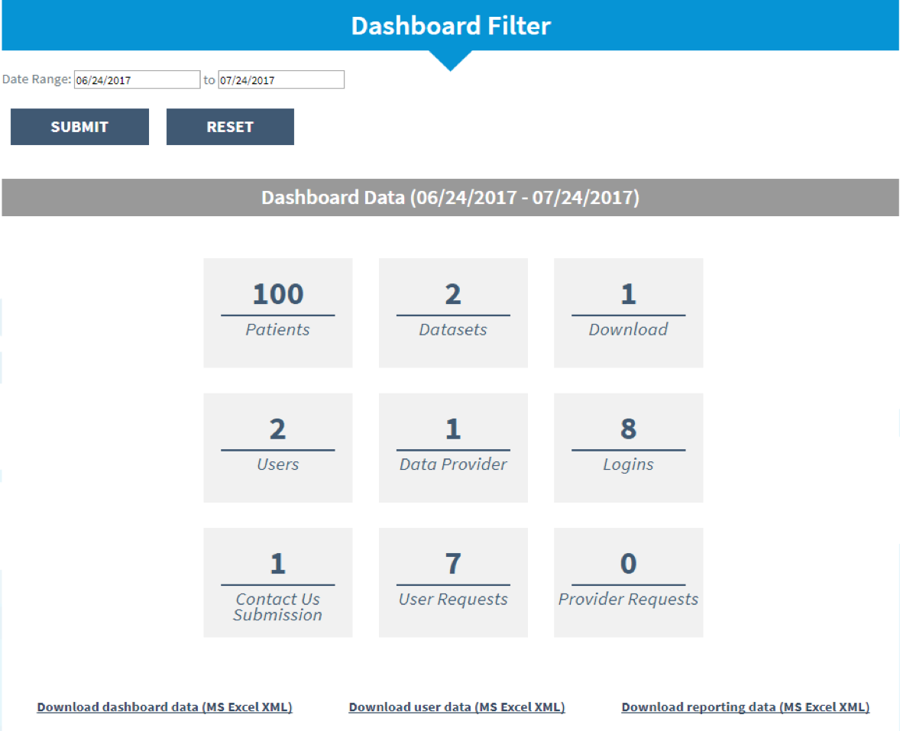
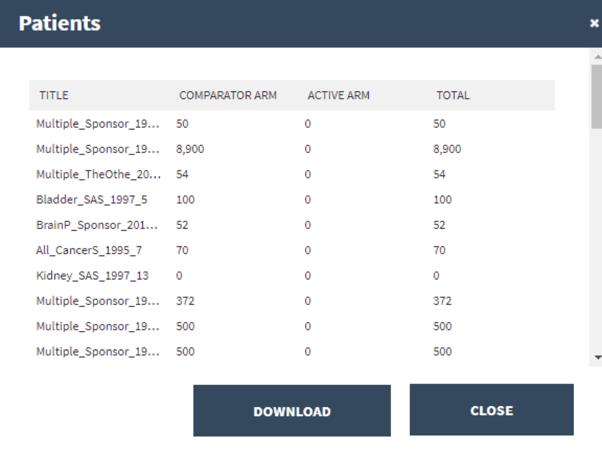
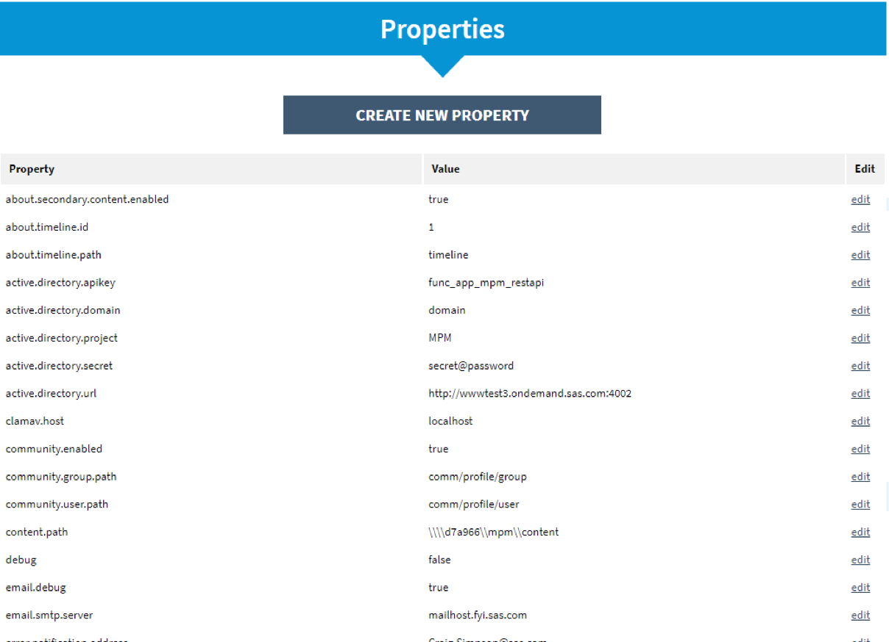

Visit Project Data Sphere here!
Background
During the summer of 2017, I interned at SAS Institute as a software developer intern. SAS is the world's largest privately-owned software company and develops a suite of analytics software to help businesses, organizations and customers utilize their data needs to the fullest. I interned within the SAS Solutions OnDemand sector's Health and Life Sciences division. The project I worked on is called Project Data Sphere, and my team consisted of my manager, three other developers and myself.
Summary
Project Data Sphere (PDS) is a digital library platform that provides a hub for the research community to share and analyze historical patient-level data from phase III cancer clinical trials. PDS facilitates the process for providers to share their data. The belief that data sharing allows greater collaboration between researchers and leads to life-saving solutions is the core of PDS.
Objectives
My role was to add new features to the Admin section of the PDS website. I created a dashboard to summarize user and contribution data. I added tiles that allow users to view this data within the web application itself or to download it in Excel format. For this component of the project, I worked alongside developers, UI designers and customers to visualize these summary statistics and to make the raw data accessible to the end user. I also added a Properties tab to directly edit application properties from the web application without having to restart the server each time.
Summary data of users and data contributions.
Dashboard Use
There has been demand from customers to know how the counts of user and contribution data are calculated. As a result, the summary dashboard was created to help users better understand the types of data and contributions that make up PDS. We have also received requests to be able to download the data, so the option to download each type of data in spreadsheet format was added.
An example of the table view for patient summary data.
Properties Tab
PDS application properties include URLs, emails, username and password credentials, active directories and other information. In order to edit property values, we had to run insert and update queries in SQL and restart the server for these values to update. With the new properties tab, the user can edit the name or value of a property and directly update the database once submitted.
Directly edit application properties without restarting the server.
Architecture
- Spring framework for Java
- uses Model-View-Controller (MVC) pattern
- MySQL for backend queries
- JavaScript, jQuery and AJAX calls for functionality

User sends information to the controller, which then updates and retrieves the model data, which generates the HTML view that the user sees (if specified).